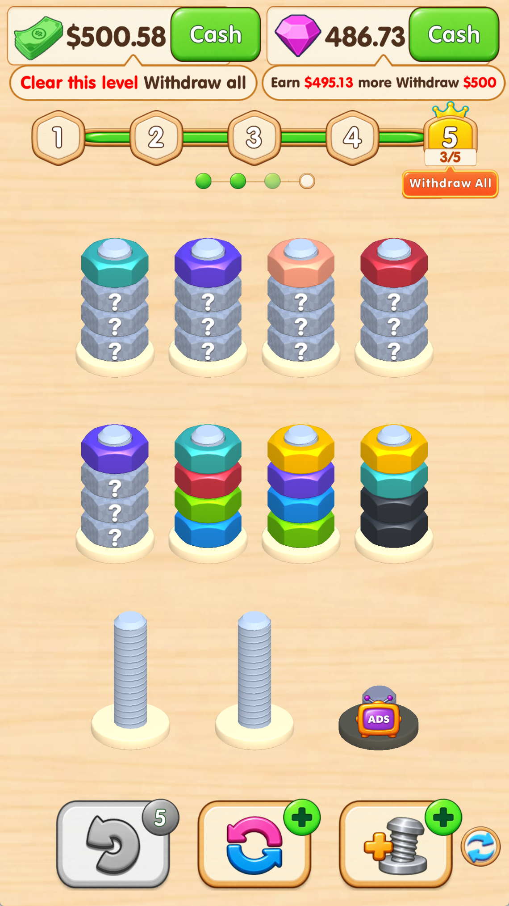
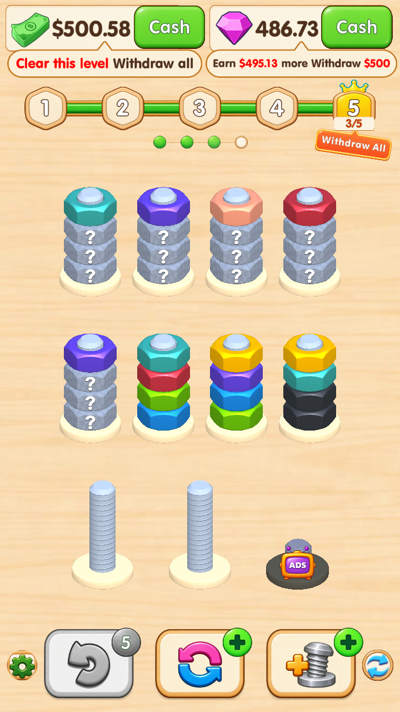
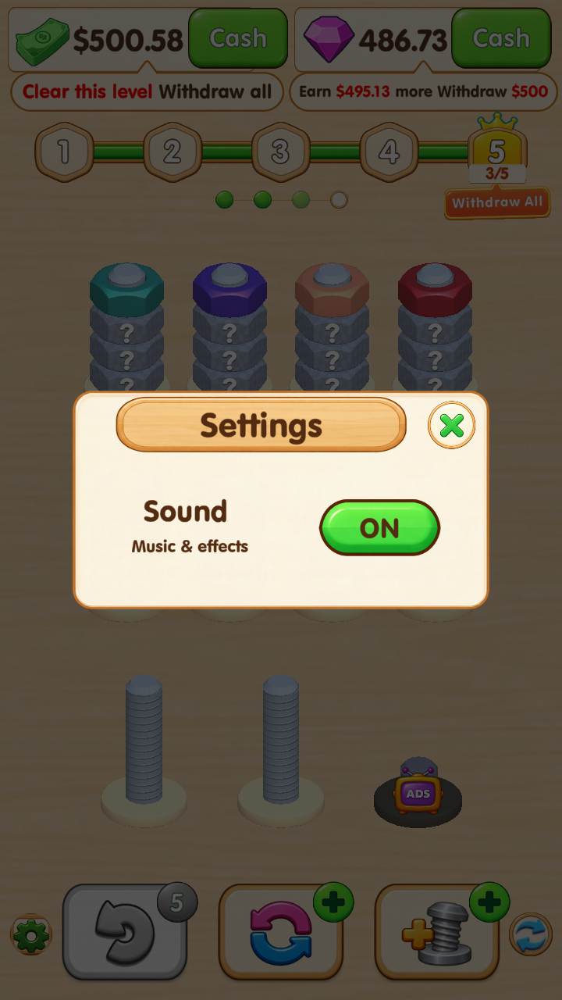

左下角齿轮按钮已接回设置弹窗。声音开关控制背景音乐与音效，修改后自动保存。
左图为你提供的截图；中、右图为 Unity 实际运行截图，使用隔离验收存档。已检查 720×1280 和 720×1600 两种竖屏尺寸；非 Android 真机验收。



验收通过：标准 Button 命中与点击、声音开关与存档、关闭后重开、重复点击保护、弹窗防穿透和两种屏幕比例。
原玩家存档已恢复。工程已更新，本次未重新打 APK。查看验收报告 · 查看 720×1600 主界面